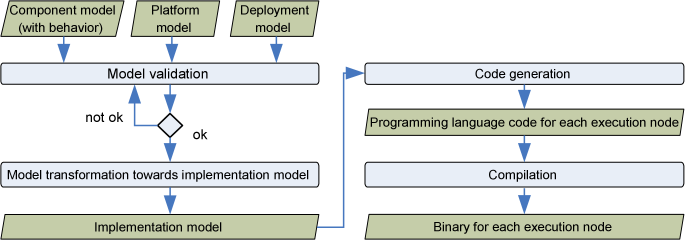

Overview
Embedded and real-time systems are characterized by timing and resource constraints - sometimes also
denoted as non-functional properties. Since these systems get more and more complex, it is important
that the non-functional properties are not just specified in the documentation and respected by the
implemented system, but that these are explicitly modeled and suitable code is derived from the model.
Qompass Designer is a component based modeling approach that supports the code generation from embedded
systems. It is part of the Qompass tool-suite integrated into Papyrus. The separation of concerns between
the two tools is that
- Qompass analyzer analyzes a system, in particular with respect to schedulability
analysis. It enables the validation of several variants to allocate software components to execution
resources and thus provides an architectural exploration
- Qompass designer supports the code generation for a specified architecture. It enables this code
generation by means of a sequence of transformations steps and a final code generation step as
shown in the figure below.

Application modeling is based on the Flex-eWare
component model (FCM). This component model is aligned with the OMG standard
(D&C), click here for more
information on the component model.
From model towards executable code
Technically, the application model is a UML model with the profiles
FCM and MARTE (we recommend to use the open
source UML editor Papyrus). The latter is the OMG standard for embedded and real-time systems.
The
transition from the model towards executable code is done by a sequence
of model transformations. These transformations include the template
instantiation of connectors from a model library. This instantiation
includes not only model elements, but also code by means
of Acceleo templates. The final code generation uses standard code generation
facilities of Papyrus. An overview of the approach is shown in the figure
below.
References